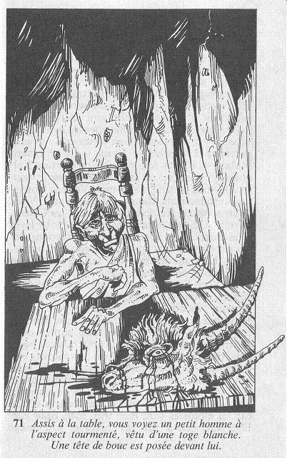

Vous ouvrez la porte, et vous jetez un coup d'œil à l'intérieur de la pièce. Le sol est couvert de poussière et les murs taillés dans le roc sont nus. Une table en bois grossier et une chaise sont poussées contre l'un des murs et, assis à cette table, vous voyez un petit homme à l'aspect tourmenté vêtu d'une toge blanche. Une tête de bouc est posée devant lui.

« Bonjour, dit-il nerveusement, Salut au Maître. Je suis prêt à me repentir. Où en est la cérémonie ? Et, hum... est-ce mon tour maintenant ? » Il se penche alors vers vous et vous murmure : « Je ne suis pas pauvre. Aidez-moi à m'échapper de ce lieu et vous serez très généreusement récompensé.» Qu'allez-vous faire ? Allez-vous lui dire qui vous êtes ou le laisser continuer à parler sans manifester la moindre émotion ?